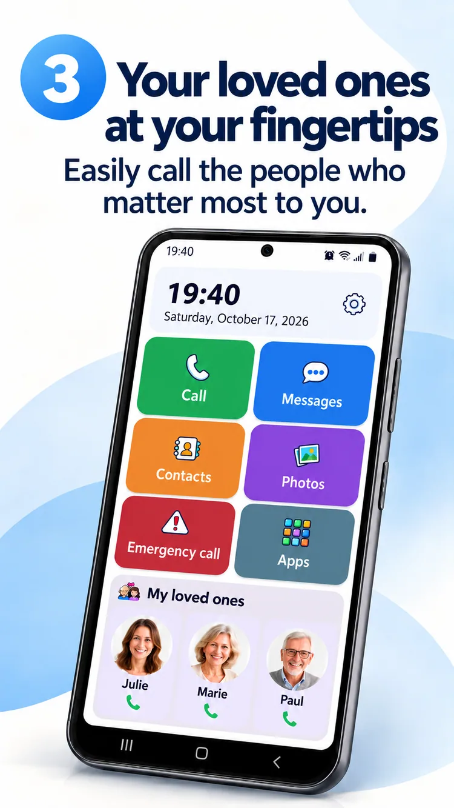
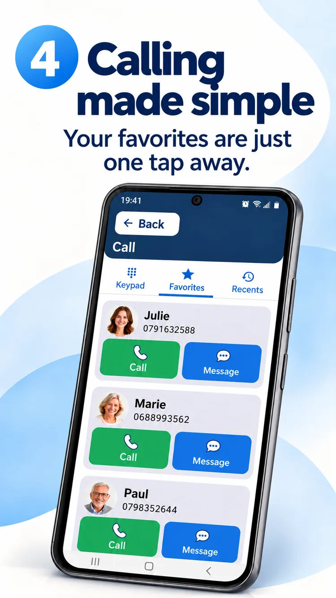
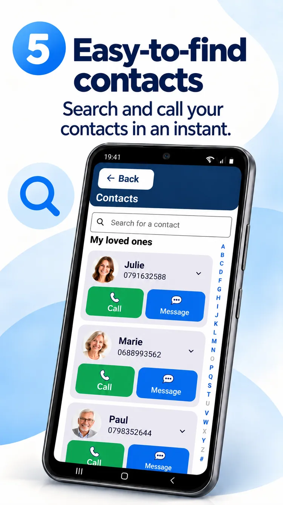
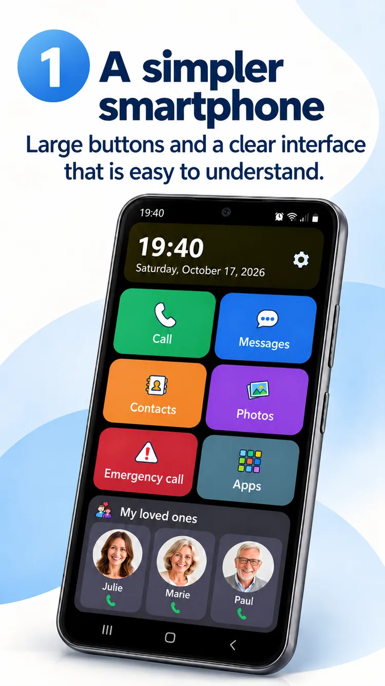

01
One photo. One call.
Keep the people who matter close.


An easier Android home screen, your loved ones close at hand and more freedom to enjoy what matters.
ClikoSpido transforms a compatible Android home screen into a clear, familiar, customizable space. Less hesitation and more independence every day.
Large controls, useful actions and an interface that gives the essentials room to breathe.

Calls, messages, contacts, photos, camera and an emergency shortcut: get to your most-used actions quickly.
Illustrative promotional image; the installed app may look different.
Keep the people who matter close.

A large dial pad and readable controls.

Contact photos and alphabetical search.

A family member can adjust the display, choose allowed apps and protect certain settings with a PIN.
Explore eight official promotional images in your language.

Watch a short introduction to ClikoSpido, with localized captions.
Play the videoClear answers before you begin.
Yes, on compatible Android smartphones. You can select it as your default home launcher.
No. You can simplify a compatible Android phone you already own.
No. The Messages button opens your existing messaging app, which continues handling SMS, MMS and RCS.
No. It can call a configured contact; it is not a monitoring service or a substitute for official emergency services.
An interface designed to make everyday actions simpler.
Back to the top